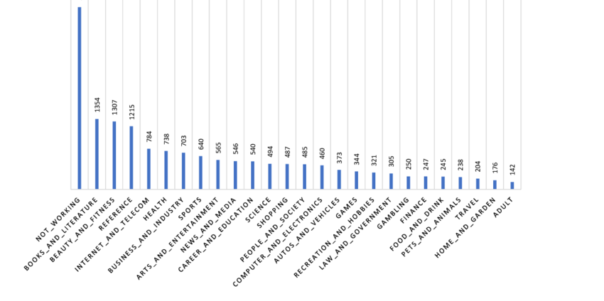

<2024-08-24 শনি>
The proliferation of AI algorithms in web applications has made it increasingly difficult for users to understand the decision-making processes behind the services they interact with. This lack of transparency can lead to concerns about bias, privacy, and accountability.
Doosti et al, in their 2017 work, also provides a similar distribution of websites based on genre 1.  Shen, Meng, et al. proposed a literature review on use of AI in web 3.0 which identifies use cases of AI in all layers of Web 3.0. It can serve as a starting point for us to understand the use of AI in web applications 2. Sajja et al wrote a book in 2012 which goes in-depth on AI in Web applications. While old, it can still provide us insights 3. For example, we should pick a domain of websites and then, start finding AI patterns on them.
We can find the following techniques for detecting AI usage in a website, using ChatGPT4o.
Statistical Analysis
Machine Learning Model Fingerprinting
API Analysis
Natural Language Processing (NLP)
Behavior Analysis
We pick Beauty as our target genre. Let us now list some websites on Beauty.
| Name | Site Link |
|---|---|
| General Lifestyle Websites | |
| Allure | allure.com |
| Cosmopolitan | cosmopolitan.com |
| Elle | elle.com |
| Fitness Magazine | fitnessmag.co.za |
| Men's Health | menshealth.com |
| Shape | shape.com |
| Women's Health | womenshealthmag.com |
| Beauty-Specific Websites | |
| Beautylish | beautylish.com |
| Into the Gloss | intothegloss.com |
| Refinery29 | refinery29.com/en-us |
| Sephora | sephora.com |
| Ulta Beauty | ulta.com |
| Niche Beauty and Fitness Websites | |
| Birchbox | birchbox.com |
| Glossier | glossier.com |
| Lululemon | shop.lululemon.com |
| Peloton | onepeloton.com |
| Yoga Journal | yogajournal.com |
AI usage in Beauty websites include:
Personalized Recommendations: AI algorithms analyze user preferences and behaviors to recommend skincare products, makeup items, or beauty routines tailored to individual needs.
Virtual Try-ons: AI-powered augmented reality (AR) allows users to virtually try on makeup or hairstyles using their device’s camera.
Image recognition: AI analyzes user photos to provide personalized beauty advice, such as identifying skin issues or suggesting suitable products.
Chatbots and Virtual Assistants: AI chatbots offer personalized beauty tips, answer product-related questions, and assist with customer service.
Trend Analysis: AI tracks and analyzes beauty trends and customer feedback to help brands adapt their product offerings and marketing strategies.
We now need to annotate the websites to understand the places where AI is actually used. For that, we need to use the sites.
Doosti, Bardia & Crandall, David & Su, Norman. (2017). A Deep Study into the History of Web Design. 329-338. 10.1145/3091478.3091503.↩︎
Shen, Meng, et al. "Artificial Intelligence for Web 3.0: A Comprehensive Survey." ACM Computing Surveys 56.10 (2024): 1-39.↩︎
Sajja, Priti Srinivas, and Rajendra Akerkar. Intelligent technologies for Web applications. CRC Press, 2012.↩︎